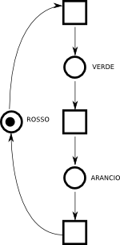
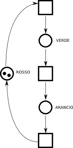

Torna alla pagina di Ingegneria del Software
:: Ingegneria del Software - Appunti del 24 Marzo 2009 ::
Ancora sulle transizioni
Come dicevamo nella lezione precedente, una transizione "sposta" i token da una parte all'altra della rete, seguendo la regola di scatto, e quindi fa mutare lo stato della nostra rete di Petri, rappresentato dalla marcatura.
Le transizioni sono considerate operazioni atomiche: lo spostamtento dei token da una parte all'altra avviene in un colpo solo, e non ci sono eventi che avvengono nel frattempo.
Inoltre, anche se in un dato istante ci può essere più di una transizione abilitata, solamente una può scattare alla volta. Quale delle due? Eeeh bel problema:) Nella rete qui in figura, il token è pronto per scattare in una transizione, ma non c'è modo per distinguere l'una dall'altra... questo vuol dire che, in questo caso, il comportamento della rete è non deterministico.
Se invece avessi avuto due token nel posto in mezzo, allora avrei avuto un comportamento deterministico: entrambe le transizioni sarebbero scattate.
Esempio: semafori
|

Semaforo singolo
| Proviamo a modellare un semaforo: questo va dallo stato rosso a quello verde, a quello arancio e poi ancora rosso. Qui a sinistra c'è la sua piccola rete.
Ma pensiamo invece di voler avere due semafori. Con gli automi avrei dovuto far proliferare gli stati per combinare in un automa solo due automi diversi. Con le reti di Petri, invece, avendo a disposizione i token, posso usare due token al posto di uno, et voilà!
In questo caso, quello che a me interessa è avere una cosa del tipo semaforo1 OR semaforo2: la combinazione tra i due semafori avviene tramite un OR logico, e a questo scopo è sufficiente mettere un token in più. Siccome in questa rete le transizioni sono abilitate da un token solo, basta che uno solo dei due token si muova per far mutare lo stato alla rete.
Notiamo che la possibilità di combinare in modo semplice, tramite AND e OR, due reti di Petri, esiste solo se le reti sono pure.
| |Due semafori
|
La combinazione tra reti è un argomento non ancora ben elaborato dal professore...
Due semafori ad un incrocio

Due semafori sincronizzatiCambiamo ora lo scenario: sono ad un incrocio, e voglio avere due semafori gestiti da un solo software, tali che se uno diventa verde, l'altro deve essere rosso etc.
Qui a sinistra c'è la soluzione a questo problema: il riquadro azzurro rappresenta un semaforo, e quello rosa l'altro semaforo. Tra i due c'è uno stato aggiuntivo, con un token aggiuntivo. In questo modo, le transizioni che portano al verde hanno due frecce entranti, e pertanto devono avere due token: se il token centrale va a sinistra, non può andare a destra, e viceversa. Così facendo ho reso mutuamente esclusivo il funzionamento del semaforo.
Si dice che due transizioni che hanno delle precondizioni in comune abbiano un'interferenza: i loro insiemi di precondizioni non sono disgiunti.
Ma non siamo del tutto felici: quando il token centrale è disponibile, andrà a destra o a sinistra? Come abbiamo detto prima, la risposta è boh perché si tratta di un comportamento non deterministico! All'atto pratico avremmo una coppia di semafori in cui uno va avanti sempre e l'altro rimane sempre rosso etc.
Per risolvere questo problema, come dicevamo sopra, potrei colorare i token, oppure complicare la rete. Personalmente, credo che avrei optato per una rete lineare in cui un posto non rappresenta solo uno stato di un semaforo, ma una coppia di stati: rosso di qui e verde di là, per esempi. Non sarà elegante, ma rende l'idea di "complicare" la rete.
Dal punto di vista operativo, in generale si provvede prima a disegnare una rete di Petri non deterministica ma corretta (come può esserlo? Mah!) e poi si aggiungono i colori per forzare il comportamento che vogliamo. In altre parole: non vale la pena angustiarsi per creare una rete di Petri che abbia solo il comportamento giusto, ma creiamo prima una che non lo contenga esclusivamente e individuiamolo solo dopo con i colori.
C'è un'osservazione da fare relativa alla rete dei due semafori sincronizzati. Dovendo realizzare le loro matrici I, O e C dovremo stare attenti a quanti token passano per le frecce.
Prendiamo ad esempio la transizione che si trova in cima ai semafori, quella che precede lo stato verde. Ha due frecce entranti, il che vuol dire che necessiterà di due token per essere attivata. Ma la sua freccia uscente non ha marcata una capacità di due! Dicevamo nella lezione scorsa che le frecce sono etichettate con la loro capacità. Qui invece no, per qualche oscura convenzione o distrazione, e allora bisogna ricordarsi che se in una transizione entrano due token, due devono uscirne: il numero di token complessivo in una rete è sempre uguale. Se scrivendo matrici vi accorgeste che passando da una marcatura all'altra i token sono scomparsi, sarebbe chiaro indizio di un errore.
Graficamente, posso avere:
- un arco con un'etichetta numerica
- più archi uscenti, ciascuno recante 1 token solo
In questo modo possiamo dire che la capacità degli archi è equivalente al numero di archi uscenti.
Torna alla pagina di Ingegneria del Software